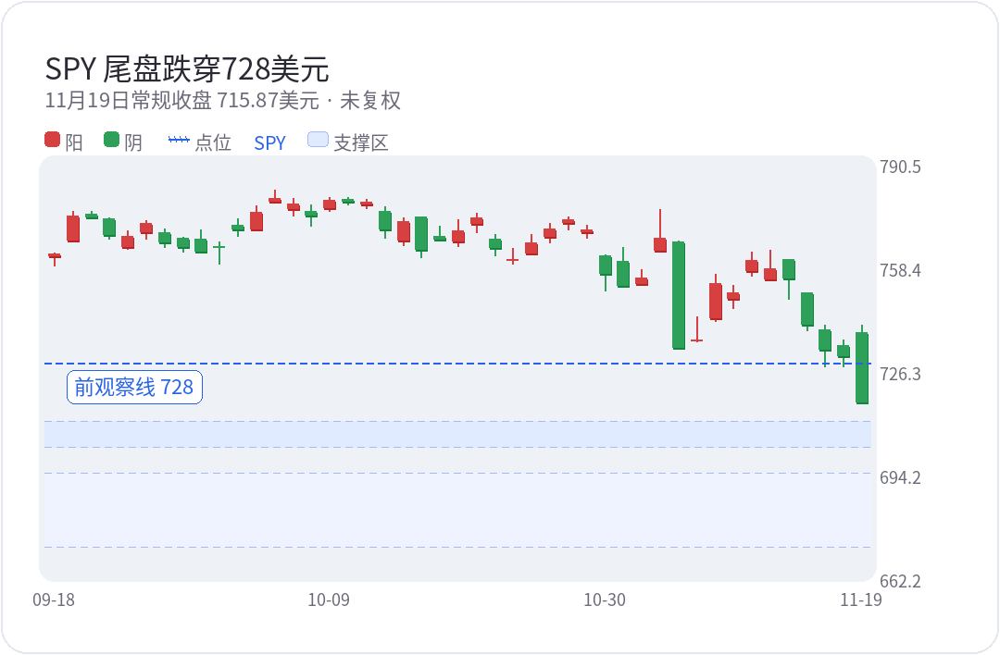
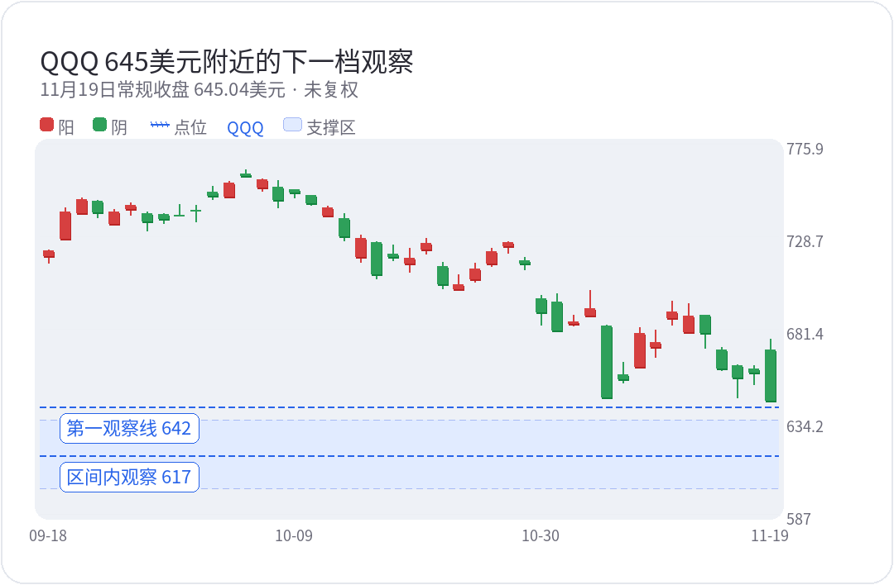
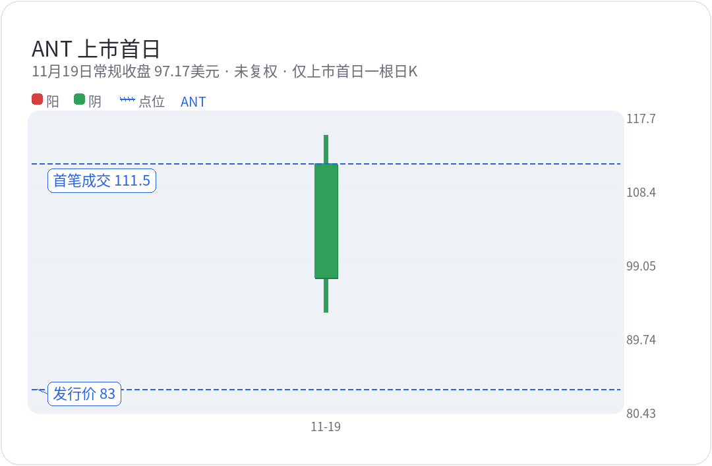
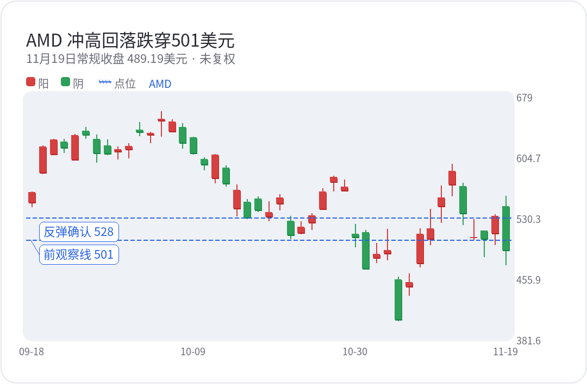
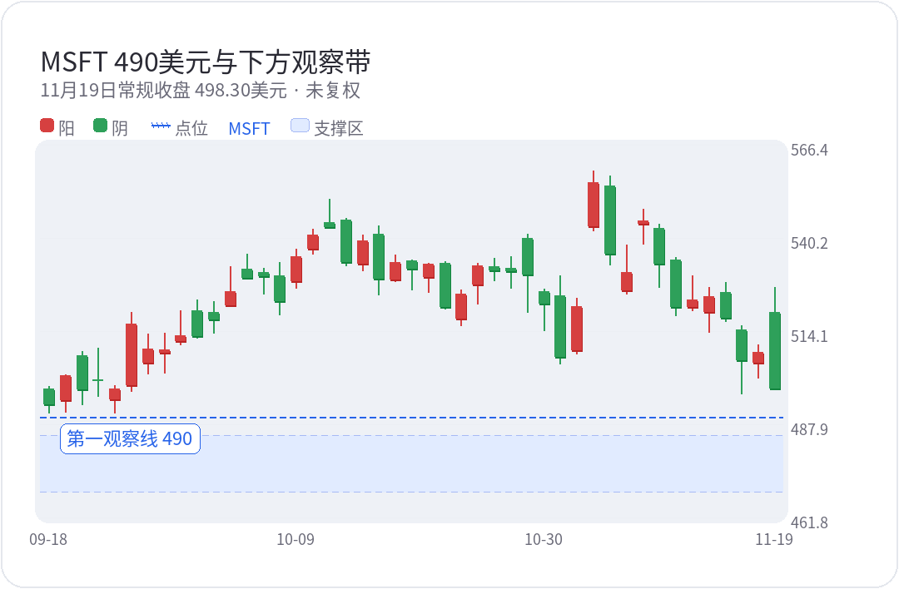
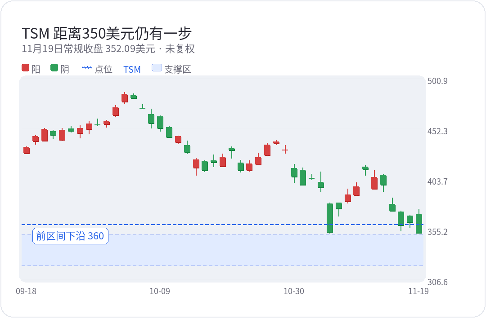
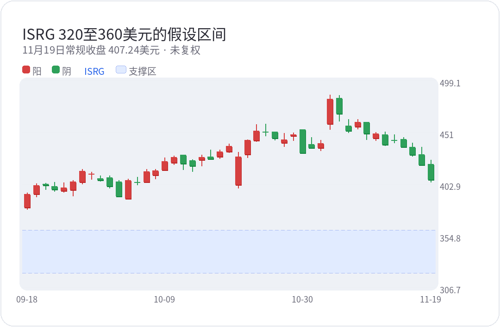
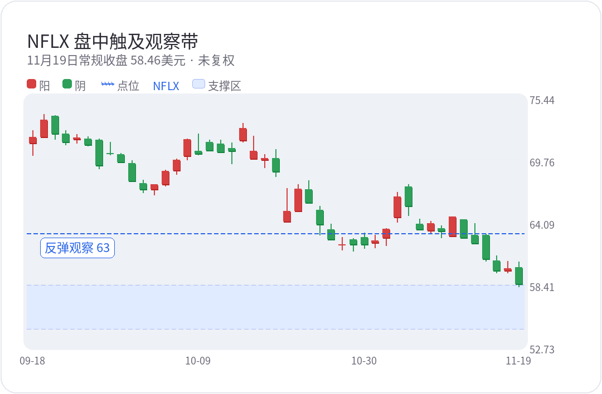

<div style="margin:0;padding:0;background:#f5f7fa;color:#2a2a34;font-size:16px;line-height:1.9;font-family:-apple-system,BlinkMacSystemFont,'SF Pro Text','PingFang SC','Hiragino Sans GB','Microsoft YaHei',Arial,sans-serif;font-variant-numeric:tabular-nums;font-feature-settings:'tnum' 1,'lnum' 1;text-align:left !important;text-align-last:left;letter-spacing:0;word-spacing:normal;white-space:normal;word-break:normal;box-sizing:border-box;"><div style="margin:0;background:#ffffff;padding:28px 22px 44px 22px;box-sizing:border-box;text-align:left !important;text-align-last:left;letter-spacing:0;word-spacing:normal;white-space:normal;word-break:normal;"><p style="display:block;width:100%;margin:0 0 12px 0;padding:0;color:#2763e9;font-size:10px;line-height:1.6;font-weight:650;letter-spacing:0.12em;text-align:center !important;text-align-last:center;word-spacing:normal;white-space:normal;word-break:normal;box-sizing:border-box;">美股 · 期权 · 资讯 · 观点</p><div style="margin:0 0 0 0;padding:28px 0 0 0;text-align:left !important;text-align-last:left;letter-spacing:0;word-spacing:normal;white-space:normal;word-break:normal;box-sizing:border-box;"><div style="margin:0 0 12px 0;padding:0;text-align:left !important;line-height:1.2;border:0;display:flex;align-items:center;gap:10px;text-align-last:left;letter-spacing:0;word-spacing:normal;white-space:normal;word-break:normal;box-sizing:border-box;"><span style="display:inline-block;flex:0 0 auto;vertical-align:middle;color:#2763e9;font-size:12px;font-weight:850;letter-spacing:0.12em;line-height:1.2;text-transform:uppercase;border:0;box-sizing:border-box;">0 · FOCUS</span><span style="display:block;flex:1 1 auto;min-width:36px;vertical-align:middle;height:1px;margin:0 0 2px 0;background:#2763e9;line-height:1px;font-size:0;border:0;box-sizing:border-box;"></span></div><p style="margin:0 0 16px 0;padding:0;color:#2a2a34;font-size:22px;line-height:1.45;font-weight:850;text-align:left !important;letter-spacing:0;text-align-last:left;word-spacing:normal;white-space:normal;word-break:normal;box-sizing:border-box;">开盘的涨幅全吐了出去</p><p style="margin:0 0 16px 0;padding:0;color:#454550;font-size:16px;line-height:1.9;font-weight:400;text-align:left !important;letter-spacing:0;word-spacing:normal;white-space:normal;word-break:normal;text-align-last:left;box-sizing:border-box;">11月19日，标普500从盘中上涨转为跌2.02%，收在7175.83点。纳斯达克综合指数跌2.25%，道指跌2.19%，罗素2000跌2.18%。超过九成标普成分股收跌。衡量标普500期权隐含波动的VIX盘中最高29.13，收在28.44，单日涨近16%。期权市场给波动抬了价，现货又是普跌。盘后关注点从能不能反弹，变成反弹时还有多少股票能跟上。</p><div class="rhino-bar-chart" style="padding:16px 18px;margin:18px 0 26px;background:#f8fbff;border-radius:12px;border:1px solid #e1eafa;box-sizing:border-box;"><p style="font-size:13px;color:#2763e9;font-weight:750;margin:0 0 8px;box-sizing:border-box;">11月19日四大指数收盘跌幅</p><div style="margin:9px 0 13px;box-sizing:border-box;"><div style="display:flex;justify-content:space-between;color:#454550;font-size:13px;gap:8px;box-sizing:border-box;"><span style="min-width:0;overflow-wrap:anywhere;box-sizing:border-box;">标普500</span><span style="font-weight:700;text-align:right;overflow-wrap:anywhere;box-sizing:border-box;"><span style="white-space:nowrap;box-sizing:border-box;">-2.02%</span></span></div><div style="height:11px;background:#e7edf6;border-radius:5px;overflow:hidden;margin-top:5px;box-sizing:border-box;"><div style="height:11px;width:90%;background:#2763e9;border-radius:5px;box-sizing:border-box;"></div></div></div><div style="margin:9px 0 13px;box-sizing:border-box;"><div style="display:flex;justify-content:space-between;color:#454550;font-size:13px;gap:8px;box-sizing:border-box;"><span style="min-width:0;overflow-wrap:anywhere;box-sizing:border-box;">纳指综合</span><span style="font-weight:700;text-align:right;overflow-wrap:anywhere;box-sizing:border-box;"><span style="white-space:nowrap;box-sizing:border-box;">-2.25%</span></span></div><div style="height:11px;background:#e7edf6;border-radius:5px;overflow:hidden;margin-top:5px;box-sizing:border-box;"><div style="height:11px;width:100%;background:#2763e9;border-radius:5px;box-sizing:border-box;"></div></div></div><div style="margin:9px 0 13px;box-sizing:border-box;"><div style="display:flex;justify-content:space-between;color:#454550;font-size:13px;gap:8px;box-sizing:border-box;"><span style="min-width:0;overflow-wrap:anywhere;box-sizing:border-box;">道指</span><span style="font-weight:700;text-align:right;overflow-wrap:anywhere;box-sizing:border-box;"><span style="white-space:nowrap;box-sizing:border-box;">-2.19%</span></span></div><div style="height:11px;background:#e7edf6;border-radius:5px;overflow:hidden;margin-top:5px;box-sizing:border-box;"><div style="height:11px;width:97%;background:#2763e9;border-radius:5px;box-sizing:border-box;"></div></div></div><div style="margin:9px 0 13px;box-sizing:border-box;"><div style="display:flex;justify-content:space-between;color:#454550;font-size:13px;gap:8px;box-sizing:border-box;"><span style="min-width:0;overflow-wrap:anywhere;box-sizing:border-box;">罗素2000</span><span style="font-weight:700;text-align:right;overflow-wrap:anywhere;box-sizing:border-box;"><span style="white-space:nowrap;box-sizing:border-box;">-2.18%</span></span></div><div style="height:11px;background:#e7edf6;border-radius:5px;overflow:hidden;margin-top:5px;box-sizing:border-box;"><div style="height:11px;width:97%;background:#2763e9;border-radius:5px;box-sizing:border-box;"></div></div></div></div><p style="margin:0 0 16px 0;padding:0;color:#454550;font-size:16px;line-height:1.9;font-weight:400;text-align:left !important;letter-spacing:0;word-spacing:normal;white-space:normal;word-break:normal;text-align-last:left;box-sizing:border-box;">交易所盘中记录显示，标普从美东上午约10点开始回吐涨幅。同期公布的费城联储11月制造业调查，活动指数从20.9滑到6.3，新订单转为负值，投入价格指数却从43.2升到58.2。增长和成本给了市场相反的信号。</p><p style="margin:0 0 16px 0;padding:0;color:#454550;font-size:16px;line-height:1.9;font-weight:400;text-align:left !important;letter-spacing:0;word-spacing:normal;white-space:normal;word-break:normal;text-align-last:left;box-sizing:border-box;">截至11月12日当周，有公开报道的主经纪商客户样本中，科技是净卖出最多的板块，多空头寸之比降至1.50。这个样本有助于解释为什么抛压不只在周四才出现。</p><p style="margin:0 0 16px 0;padding:0;color:#454550;font-size:16px;line-height:1.9;font-weight:400;text-align:left !important;letter-spacing:0;word-spacing:normal;white-space:normal;word-break:normal;text-align-last:left;box-sizing:border-box;">跟踪标普500的 <strong style="color:#2a2a34;font-weight:700;box-sizing:border-box;">SPY</strong> 盘中最高739.90美元，尾盘收在715.87美元。728美元失守后，反弹如果在这一带遇阻，说明原来的支撑还没夺回来。下一档可看702至710美元，压力加大时再看671至694美元。标普指数已进入7100至7200点的观察带，更深一档是6800至7000点。ETF的区间按美元独立观察。到了观察带，先看回踩有多少成交，再看上涨有没有扩散到更多成分股。</p><p style="margin:4px 0 16px 0;padding:0;text-align:center !important;text-align-last:center;word-spacing:normal;white-space:normal;word-break:normal;box-sizing:border-box;"></p><p style="margin:0 0 16px 0;padding:0;color:#454550;font-size:16px;line-height:1.9;font-weight:400;text-align:left !important;letter-spacing:0;word-spacing:normal;white-space:normal;word-break:normal;text-align-last:left;box-sizing:border-box;">跟踪纳斯达克100的 <strong style="color:#2a2a34;font-weight:700;box-sizing:border-box;">QQQ</strong> 收在645.04美元，离642美元观察位很近。若科技股继续拖累，600至635美元是下一档观察带，617美元在这一区间里面。等盘面能放量企稳，再看标普和纳指能不能一起收复失地。</p><p style="margin:4px 0 16px 0;padding:0;text-align:center !important;text-align-last:center;word-spacing:normal;white-space:normal;word-break:normal;box-sizing:border-box;"></p></div><div style="margin:30px 0 0 0;padding:28px 0 0 0;text-align:left !important;text-align-last:left;letter-spacing:0;word-spacing:normal;white-space:normal;word-break:normal;box-sizing:border-box;"><div style="margin:0 0 12px 0;padding:0;text-align:left !important;line-height:1.2;border:0;display:flex;align-items:center;gap:10px;text-align-last:left;letter-spacing:0;word-spacing:normal;white-space:normal;word-break:normal;box-sizing:border-box;"><span style="display:inline-block;flex:0 0 auto;vertical-align:middle;color:#2763e9;font-size:12px;font-weight:850;letter-spacing:0.12em;line-height:1.2;text-transform:uppercase;border:0;box-sizing:border-box;">1 · FOCUS</span><span style="display:block;flex:1 1 auto;min-width:36px;vertical-align:middle;height:1px;margin:0 0 2px 0;background:#2763e9;line-height:1px;font-size:0;border:0;box-sizing:border-box;"></span></div><p style="margin:0 0 16px 0;padding:0;color:#2a2a34;font-size:22px;line-height:1.45;font-weight:850;text-align:left !important;letter-spacing:0;text-align-last:left;word-spacing:normal;white-space:normal;word-break:normal;box-sizing:border-box;">Anthropic首日涨了17%，开盘买家却亏了近13%</p><p style="margin:0 0 16px 0;padding:0;color:#454550;font-size:16px;line-height:1.9;font-weight:400;text-align:left !important;letter-spacing:0;word-spacing:normal;white-space:normal;word-break:normal;text-align-last:left;box-sizing:border-box;">Anthropic的股票 <strong style="color:#2a2a34;font-weight:700;box-sizing:border-box;">ANT</strong> 发行价83美元，首笔成交111.50美元，盘中最高115.10美元，最低92.72美元，最后收在97.17美元。按发行价获配，到收盘仍有约17.1%的账面涨幅。若按开盘价买入，到收盘反而跌约12.9%。高点买入的回撤约15.6%。晚间8点盘后报价92.51美元，较常规收盘再跌约4.8%。</p><p style="margin:4px 0 16px 0;padding:0;text-align:center !important;text-align-last:center;word-spacing:normal;white-space:normal;word-break:normal;box-sizing:border-box;"></p><p style="margin:0 0 16px 0;padding:0;color:#454550;font-size:16px;line-height:1.9;font-weight:400;text-align:left !important;letter-spacing:0;word-spacing:normal;white-space:normal;word-break:normal;text-align-last:left;box-sizing:border-box;">同一只股票，83美元和111.50美元的起点，已经把两类买家的盈亏拉开。开盘溢价这么高，第一轮换手之后有没有新的买家进来，才会影响下一步价格。有媒体报道，约1200家提交订单的机构中，超过一半没有获配。获配结果只能说明申购怎样分配，接下来几天，能否缩小开盘和收盘的落差，比首日仍有发行涨幅更值得留意。</p></div><div style="margin:30px 0 0 0;padding:28px 0 0 0;text-align:left !important;text-align-last:left;letter-spacing:0;word-spacing:normal;white-space:normal;word-break:normal;box-sizing:border-box;"><div style="margin:0 0 12px 0;padding:0;text-align:left !important;line-height:1.2;border:0;display:flex;align-items:center;gap:10px;text-align-last:left;letter-spacing:0;word-spacing:normal;white-space:normal;word-break:normal;box-sizing:border-box;"><span style="display:inline-block;flex:0 0 auto;vertical-align:middle;color:#2763e9;font-size:12px;font-weight:850;letter-spacing:0.12em;line-height:1.2;text-transform:uppercase;border:0;box-sizing:border-box;">2 · RISK</span><span style="display:block;flex:1 1 auto;min-width:36px;vertical-align:middle;height:1px;margin:0 0 2px 0;background:#2763e9;line-height:1px;font-size:0;border:0;box-sizing:border-box;"></span></div><p style="margin:0 0 16px 0;padding:0;color:#2a2a34;font-size:22px;line-height:1.45;font-weight:850;text-align:left !important;letter-spacing:0;text-align-last:left;word-spacing:normal;white-space:normal;word-break:normal;box-sizing:border-box;">AMD跌破501美元，做空报告把风险推到台前</p><p style="margin:0 0 16px 0;padding:0;color:#454550;font-size:16px;line-height:1.9;font-weight:400;text-align:left !important;letter-spacing:0;word-spacing:normal;white-space:normal;word-break:normal;text-align-last:left;box-sizing:border-box;">做空机构Hunterbrook在美东上午10点27分发布报告，称一家已被美国列入实体清单的中国服务器厂商及关联企业的产品中出现AMD固件。报告披露了对 <strong style="color:#2a2a34;font-weight:700;box-sizing:border-box;">AMD</strong> 的空头头寸，以及对一篮子可比公司的多头头寸。AMD回应称报告歪曲了其做法和合作关系，公司遵守适用的美国出口管制。后续要核实的是固件怎么进入这些产品、相关公司做了什么。公开报道暂未独立核实相应指控。</p><p style="margin:0 0 16px 0;padding:0;color:#454550;font-size:16px;line-height:1.9;font-weight:400;text-align:left !important;letter-spacing:0;word-spacing:normal;white-space:normal;word-break:normal;text-align-last:left;box-sizing:border-box;"><strong style="color:#2a2a34;font-weight:700;box-sizing:border-box;">AMD</strong> 从盘中最高555.01美元跌到最低470.56美元，最后收489.19美元，较前收跌7.72%，跌穿501美元观察位。股价在报告发布前已经从日高回落，报告公布后继续下挫。ANT开始交易时，大盘也早已回吐涨幅，两个事件都发生在更广泛的卖盘里。若出现反弹，先看能否收复501美元并守住，528美元是下一处需要重新确认的价位。</p><p style="margin:4px 0 16px 0;padding:0;text-align:center !important;text-align-last:center;word-spacing:normal;white-space:normal;word-break:normal;box-sizing:border-box;"></p></div><div style="margin:30px 0 0 0;padding:28px 0 0 0;text-align:left !important;text-align-last:left;letter-spacing:0;word-spacing:normal;white-space:normal;word-break:normal;box-sizing:border-box;"><div style="margin:0 0 12px 0;padding:0;text-align:left !important;line-height:1.2;border:0;display:flex;align-items:center;gap:10px;text-align-last:left;letter-spacing:0;word-spacing:normal;white-space:normal;word-break:normal;box-sizing:border-box;"><span style="display:inline-block;flex:0 0 auto;vertical-align:middle;color:#2763e9;font-size:12px;font-weight:850;letter-spacing:0.12em;line-height:1.2;text-transform:uppercase;border:0;box-sizing:border-box;">3 · FOCUS</span><span style="display:block;flex:1 1 auto;min-width:36px;vertical-align:middle;height:1px;margin:0 0 2px 0;background:#2763e9;line-height:1px;font-size:0;border:0;box-sizing:border-box;"></span></div><p style="margin:0 0 16px 0;padding:0;color:#2a2a34;font-size:22px;line-height:1.45;font-weight:850;text-align:left !important;letter-spacing:0;text-align-last:left;word-spacing:normal;white-space:normal;word-break:normal;box-sizing:border-box;">7200点失守，盈利下修会把估值压到哪里</p><p style="margin:0 0 16px 0;padding:0;color:#454550;font-size:16px;line-height:1.9;font-weight:400;text-align:left !important;letter-spacing:0;word-spacing:normal;white-space:normal;word-break:normal;text-align-last:left;box-sizing:border-box;">给标普500约388点的2027年前瞻每股收益，乘18至22倍市盈率，得出的区间约为6986至8539点。7175.83点相当于约18.5倍。离估值区间下沿只剩约190点，盈利假设每变一点，所谓支撑区就得跟着重算。财报季接近尾声。少数公司的指引变弱后，值得盯的是这些下修会不会扩散到整个指数的2027年盈利预期。</p><p style="margin:0 0 16px 0;padding:0;color:#454550;font-size:16px;line-height:1.9;font-weight:400;text-align:left !important;letter-spacing:0;word-spacing:normal;white-space:normal;word-break:normal;text-align-last:left;box-sizing:border-box;">假设半导体贡献指数四分之一的盈利，且板块盈利整体下修30%，乘出来是指数盈利少7.5%，从约388降至约359点。若还用18倍，算出的下沿约6460点。6700至6800点可以单列为压力观察区间，在这组下修后的盈利假设下，对应约18.7至18.9倍。价格如果靠近这一区间，先看新的盈利预测，再看市场用的倍数。两项一起往下，估值压力还会加重。</p></div><div style="margin:30px 0 0 0;padding:28px 0 0 0;text-align:left !important;text-align-last:left;letter-spacing:0;word-spacing:normal;white-space:normal;word-break:normal;box-sizing:border-box;"><div style="margin:0 0 12px 0;padding:0;text-align:left !important;line-height:1.2;border:0;display:flex;align-items:center;gap:10px;text-align-last:left;letter-spacing:0;word-spacing:normal;white-space:normal;word-break:normal;box-sizing:border-box;"><span style="display:inline-block;flex:0 0 auto;vertical-align:middle;color:#2763e9;font-size:12px;font-weight:850;letter-spacing:0.12em;line-height:1.2;text-transform:uppercase;border:0;box-sizing:border-box;">4 · SETUP</span><span style="display:block;flex:1 1 auto;min-width:36px;vertical-align:middle;height:1px;margin:0 0 2px 0;background:#2763e9;line-height:1px;font-size:0;border:0;box-sizing:border-box;"></span></div><p style="margin:0 0 16px 0;padding:0;color:#2a2a34;font-size:22px;line-height:1.45;font-weight:850;text-align:left !important;letter-spacing:0;text-align-last:left;word-spacing:normal;white-space:normal;word-break:normal;box-sizing:border-box;">微软还在490美元上方，台积电离区间只差一步</p><p style="margin:0 0 16px 0;padding:0;color:#454550;font-size:16px;line-height:1.9;font-weight:400;text-align:left !important;letter-spacing:0;word-spacing:normal;white-space:normal;word-break:normal;text-align-last:left;box-sizing:border-box;"><strong style="color:#2a2a34;font-weight:700;box-sizing:border-box;">MSFT</strong> 收在498.30美元，盘中最低498.16美元。490美元仍是下一道观察线，其后看469至485美元。微软最新季度的经营现金流约580亿美元，扣除现金资本开支后自由现金流约186亿美元，公司预计整个财年仍为正。接下来要盯的是数据中心支出和融资租赁，尤其是有多少经营现金可以留给其他投资和股东回报。微软11月初完成了250亿美元债券发行，用途是一般公司事务。</p><p style="margin:4px 0 16px 0;padding:0;text-align:center !important;text-align-last:center;word-spacing:normal;white-space:normal;word-break:normal;box-sizing:border-box;"></p><p style="margin:0 0 16px 0;padding:0;color:#454550;font-size:16px;line-height:1.9;font-weight:400;text-align:left !important;letter-spacing:0;word-spacing:normal;white-space:normal;word-break:normal;text-align-last:left;box-sizing:border-box;"><strong style="color:#2a2a34;font-weight:700;box-sizing:border-box;">TSM</strong> 收在352.09美元，盘中最低约351.14美元。360至378美元一档已经失守，320至350美元是更深一档观察区，周四盘中尚未触及。一位投资者的公开交易计划是，持有约6%组合仓位，等股价进入区间且出现日线放量止跌，再考虑加4个百分点。这里最容易漏掉的是第二个条件。价格走到区间里，还得有成交放大和止跌迹象。</p><p style="margin:4px 0 16px 0;padding:0;text-align:center !important;text-align-last:center;word-spacing:normal;white-space:normal;word-break:normal;box-sizing:border-box;"></p></div><div style="margin:30px 0 0 0;padding:28px 0 0 0;text-align:left !important;text-align-last:left;letter-spacing:0;word-spacing:normal;white-space:normal;word-break:normal;box-sizing:border-box;"><div style="margin:0 0 12px 0;padding:0;text-align:left !important;line-height:1.2;border:0;display:flex;align-items:center;gap:10px;text-align-last:left;letter-spacing:0;word-spacing:normal;white-space:normal;word-break:normal;box-sizing:border-box;"><span style="display:inline-block;flex:0 0 auto;vertical-align:middle;color:#2763e9;font-size:12px;font-weight:850;letter-spacing:0.12em;line-height:1.2;text-transform:uppercase;border:0;box-sizing:border-box;">5 · FOCUS</span><span style="display:block;flex:1 1 auto;min-width:36px;vertical-align:middle;height:1px;margin:0 0 2px 0;background:#2763e9;line-height:1px;font-size:0;border:0;box-sizing:border-box;"></span></div><p style="margin:0 0 16px 0;padding:0;color:#2a2a34;font-size:22px;line-height:1.45;font-weight:850;text-align:left !important;letter-spacing:0;text-align-last:left;word-spacing:normal;white-space:normal;word-break:normal;box-sizing:border-box;">直觉外科和奈飞的等待条件不一样</p><p style="margin:0 0 16px 0;padding:0;color:#454550;font-size:16px;line-height:1.9;font-weight:400;text-align:left !important;letter-spacing:0;word-spacing:normal;white-space:normal;word-break:normal;text-align-last:left;box-sizing:border-box;"><strong style="color:#2a2a34;font-weight:700;box-sizing:border-box;">ISRG</strong> 收在407.24美元，320至360美元是估值回落后的假设观察区。区间上沿比收盘低约11.6%，价格还有距离。该交易计划只在股价走入区间后才会考虑加仓4个百分点。随着财年滚动，远期利润预测可能变化，设备安装、手术量和收入增速才是更新价位的依据。</p><p style="margin:4px 0 16px 0;padding:0;text-align:center !important;text-align-last:center;word-spacing:normal;white-space:normal;word-break:normal;box-sizing:border-box;"></p><p style="margin:0 0 16px 0;padding:0;color:#454550;font-size:16px;line-height:1.9;font-weight:400;text-align:left !important;letter-spacing:0;word-spacing:normal;white-space:normal;word-break:normal;text-align-last:left;box-sizing:border-box;"><strong style="color:#2a2a34;font-weight:700;box-sizing:border-box;">NFLX</strong> 收在58.46美元，盘中最低58.18美元，短暂进入54.30至58.30美元观察带，收盘回到上沿外。已买入计划数量一半的投资者，接下来关注区间内能否放量止跌，或者后续能否放量收复63美元。前一个信号看抛售是否放缓，后一个信号看反弹是否得到买方确认。</p><p style="margin:4px 0 16px 0;padding:0;text-align:center !important;text-align-last:center;word-spacing:normal;white-space:normal;word-break:normal;box-sizing:border-box;"></p><p style="margin:0 0 16px 0;padding:0;color:#454550;font-size:16px;line-height:1.9;font-weight:400;text-align:left !important;letter-spacing:0;word-spacing:normal;white-space:normal;word-break:normal;text-align-last:left;box-sizing:border-box;">同一份个人交易复盘中，谷歌维持原有配置，特斯拉和旅行者保险也暂无新操作。单只股票走到观察位时，还要算一遍整个组合已经有多少科技股敞口。</p></div><p style="margin:28px 0 0 0;padding:22px 0 0 0;color:#9a9aa8;font-size:12px;line-height:1.8;text-align:center !important;text-align-last:center;word-spacing:normal;white-space:normal;word-break:normal;box-sizing:border-box;">免责声明：本文仅为个人市场观察和交易复盘，不构成任何投资建议；市场有风险，交易需谨慎。</p></div></div>
